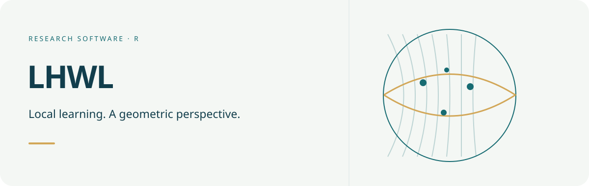

Documentation · Get started · Lasso guide · Reference

Conceptual geometry illustration, not an estimated coefficient surface.
LHWL provides local regression over representations on the Lorentz model of two-dimensional hyperbolic space. Responses and predictors remain ordinary real-valued variables; Lorentz-hyperbolic distance determines which observations form each local neighbourhood.
The package contains two regression modules:
- Lorentz Hyperbolic Weighted Regression (LHWR), implemented by
lhwr(), for unpenalized Gaussian and binomial local regression. - Lorentz Hyperbolic Weighted Penalized Regression (LHWPR), implemented by
lhwpr(), for Gaussian and binomial ridge, lasso, elastic net, MCP, and SCAD paths with focal coefficient selection.
LHWR is the original regression foundation of the package. LHWPR-Lasso is a separate sparse extension; support for further penalties and binomial models does not extend the scope of the original Gaussian LHWR theory automatically. Software functionality, numerical convergence, and statistical guarantees are different claims.
Installation
The package requires R >= 4.1.0. Source installation needs a C++17 toolchain and the declared Rcpp and RcppArmadillo dependencies. Optional OpenMP support enables focal-location parallelism; the default is one thread and the package also works without OpenMP. On Windows, use Rtools appropriate to your R version; on macOS, a working R-compatible compiler/linker is needed.
Install the development release from the public GitHub repository with:
install.packages("remotes")
remotes::install_github("byuzbasi/LHWL")After a CRAN release is available, the stable release can be installed with install.packages("LHWL").
From an unpacked, reviewed local source directory, installation is also possible with R CMD INSTALL /absolute/path/to/LHWL_source after installing dependencies. GitHub availability does not imply CRAN acceptance; a CRAN release is pending.
A reproducible LHWR example
The included wdi_lhwr data contain World Bank World Development Indicators for 2010–2024. The following example uses the complete 2024 sample. GDP growth is the response; unemployment and internet use are predictors. Standardized log GDP per capita and trade openness define the supplied economic representation and are not additional regressors.
library(LHWL)
data("wdi_lhwr")
dat <- subset(wdi_lhwr, year == 2024)
Z <- as.matrix(dat[, c("z0_lorentz", "z1_lorentz", "z2_lorentz")])
check_lhwr_Z(Z)
analysis_data <- data.frame(
gdp_growth = dat$gdp_growth,
unemployment = as.numeric(scale(dat$unemployment)),
internet_users = as.numeric(scale(dat$internet_users))
)
bw <- bw.lhwr(
gdp_growth ~ unemployment + internet_users,
data = analysis_data,
Z = Z,
approach = "AICc",
bw_grid = seq(30, 70, by = 10),
engine = "knn"
)
fit <- lhwr(
gdp_growth ~ unemployment + internet_users,
data = analysis_data,
Z = Z,
bw = bw$bw,
engine = "knn",
diagnostics = "full"
)
summary(fit)
plot(bw)
plot(fit, coefficient = "unemployment")The packaged coordinates retain the frozen location and scale constants used during data preparation. The documentation for wdi_lhwr records those constants and the source-license information.
Constructing a representation
For a scientifically meaningful two-component feature map, construct valid Lorentz-model coordinates with:
features <- data.frame(
score_1 = c(-1.0, -0.2, 0.4, 1.1),
score_2 = c(0.7, -0.4, 0.1, -0.6)
)
Z_features <- make_lhwr_Z_features(features, scale = TRUE)
check_lhwr_Z(Z_features)For a nonnegative relation or adjacency matrix, make_lhwr_Z_network() provides shortest-path MDS and spectral constructors:
A <- matrix(c(
0, 1, 1, 0,
1, 0, 1, 1,
1, 1, 0, 1,
0, 1, 1, 0
), nrow = 4, byrow = TRUE)
Z_network <- make_lhwr_Z_network(A, method = "spectral")These constructors create a representation; they do not establish that the representation is scientifically appropriate. Feature or network choices should be justified independently and rebuilt inside validation folds when they are learned from data.
Geometry, bandwidth, and prediction
Z has three columns ordered as time, first spatial coordinate, and second spatial coordinate. Its rows must match data exactly. Curvature is fixed at minus one in these utilities. Scaling the feature map changes neighbourhoods; it is a modelling choice, not merely a plotting option.
Hyperbolic locality is a candidate when hierarchy or network relationships provide a meaningful definition of similarity. Creating valid coordinates alone does not show that hyperbolic weighting improves a particular analysis. Check sensitivity to the representation, local sample support, and bandwidth.
-
geometry = "lorentz"uses intrinsic hyperbolic distance. -
geometry = "tangent"uses one logarithmic-map tangent plane (Tangent-E). Its default center is the normalized ambient mean of training locations, not an intrinsic Frechet mean. The fit stores this reference and prediction reuses it. The log map sets points at intrinsic distance at most1e-10from the reference to zero; this is not a threshold on every pairwise distance. General pairwise distances need not be preserved. - With adaptive kNN bandwidths,
bwis a neighbour count, not a radius. With fixed-distance bandwidths it is a radius. Hyperbolic-volume bandwidths are specific to Lorentz geometry. See?lhwrfor the full contract. - The exact kNN engine reduces distance storage for supported compact-kernel, adaptive Lorentz fits. It does not substitute an approximate neighbour search.
For new locations, predict(fit, newdata = ..., Znew = ...) requires both predictors and coordinates. Construct new coordinates with the training transformations, not a fresh standardization of the prediction batch. Without newdata, prediction returns calibration fitted values and does not measure out-of-sample accuracy.
LHWPR and focal selection
lhwpr() uses one standardized design and a common absolute lambda path at a given bandwidth. The intercept is not penalized. Coefficients and active sets remain focal, so a predictor may be active in one part of the representation and exactly zero elsewhere.
set.seed(20260906)
H <- simulate_H2(60, r_max = 2)
x1 <- rnorm(60)
x2 <- rnorm(60)
dat_pen <- data.frame(
y = 0.5 + (1 + 0.4 * sin(H$theta)) * x1 + rnorm(60, sd = 0.4),
x1 = x1,
x2 = x2
)
tuned <- tune.lhwpr(
y ~ x1 + x2,
data = dat_pen,
Z = H$Z,
bw_grid = c(24, 32, 40),
nlambda = 6,
nfolds = 3,
criterion = "cv",
rule = "sparse_1se",
refine = FALSE,
compare_lhwr = TRUE
)
plot(tuned)
plot(tuned, type = "landscape")
plot_lhwpr_surface(tuned$fit, "x1", type = "coefficient")
plot_lhwpr_surface(tuned$fit, "x1", type = "selection")The selection surface reports penalized activation, not a post-selection significance test. Numerical zeros mean that the penalized local fit excluded that predictor at the focal location under the selected tuning configuration.
The penalty convention is:
| Setting | Fit |
|---|---|
alpha = 0 |
Ridge; penalty has no effect |
0 < alpha < 1, penalty = "lasso"
|
Elastic net |
alpha = 1, penalty = "lasso"
|
Lasso |
alpha = 1, penalty = "mcp" or "scad"
|
Nonconvex MCP or SCAD |
Every selectable tuning row must satisfy its convergence and KKT/stationarity gates. The selected refit preserves the evaluated decreasing lambda prefix; inspect tuned$refit_diagnostics and tuned$selection_table. For nonconvex penalties, stationarity is not a certificate of a global optimum. Gaussian information criteria use conditional smoother degrees of freedom, not post-selection inferential guarantees. Binomial tuning uses validation loss.
What the built-in validation holds fixed
tune.lhwpr() uses the same folds across candidates. Its default K-fold assignment cycles through row order deterministically; it is not a random shuffle. For reproducible random folds, create and supply fold_id explicitly after setting a seed. For grouped data use a scientifically justified blocked assignment with resampling = "blocked".
The supplied representation, tangent reference, and global predictor standardization are held fixed during built-in tuning. The function does not relearn an embedding within folds. Evaluation of a complete learned pipeline requires an outer training/validation split with training-only preprocessing, representation construction, and tuning. Keep comparisons on the same observations and document any exclusions or transformations.
Diagnostics and graphics
Gaussian LHWR provides optional local-design, coefficient, F, and residual autocorrelation diagnostics. Because fitted residuals from a local smoother are not exchangeable, Moran permutation p-values are descriptive post-fit checks rather than exact tests.
local_collinearity(fit)
local_inference(fit, adjust = "BH")
moran.lhwr(fit, permutations = 99)
local_moran.lhwr(fit, permutations = 99)
plot_lhwr_poincare_map(
Z,
values = fitted(fit),
labels = dat$iso3,
value_label = "Fitted GDP growth",
show_size_legend = FALSE,
show_info = FALSE
)The package also provides Lorentz and Poincare displays, coefficient and selection surfaces, bandwidth profiles, exact evaluated tuning landscapes, and geometry comparisons with a single tangent-plane approximation.
Gaussian local standard errors and diagnostic tests are conditional on the chosen representation and smoothing specification; they do not automatically include embedding estimation or tuning uncertainty. Binomial LHWR returns probabilities and local logistic diagnostics, not Gaussian t- or F-tests. Check local class variation, rank, and convergence. LHWPR coefficient and selection displays do not provide classical post-selection p-values.
Documentation and support
Use help(package = "LHWL") for the function index and vignette(package = "LHWL") for the LHWR and Lasso tutorials. If a source installation omitted vignette building, consult the vignettes/ sources or install with build_vignettes = TRUE and the vignette dependencies. Historical hgwr.* and make_lorentz_* interfaces are retained for compatibility; new workflows should use the documented LHWR/LHWPR interfaces.
The guides are written in English and combine executable examples, interpreted output, equations, and graphics:
- An Introduction to LHWL: quick start, representation construction, LHWR, prediction, Tangent-E and diagnostics. Open with
vignette("lorentz-hgwr-introduction", package = "LHWL"). - LHWR: Kernels, Bandwidth Selection and Diagnostics: all five kernel curves, bandwidth/engine contracts, CV/AICc, F1–F3, Moran/LISA and inference limits. Open with
vignette("lhwr-diagnostics-and-tuning", package = "LHWL"). - Visualizing and Reporting LHWR Results: geometry, paired coefficient and significance maps, uncertainty, calibration, LISA, network overlays and safe PDF/PNG export. Open with
vignette("lhwr-graphics", package = "LHWL"). - Joint Tuning and Focal Selection with LHWPR-Lasso: regularization paths, joint tuning, numerical certificates and selection maps. Open with
vignette("lhwpr-lasso", package = "LHWL").
The same R Markdown sources produce installed-package vignettes and the locally built pkgdown documentation. A public documentation URL will be added when hosting is confirmed. See DOCUMENTATION.md for local rebuilding and the publication-update checklist. The source files remain under vignettes/; the web documentation also links all four rendered guides through its Get started and Articles menus.
Report reproducible software problems through the repository’s issue tracker. Include sessionInfo(), the package version, the relevant tuning/geometry settings, and a small synthetic example. Do not upload confidential data.
Data provenance, citation, and license
wdi_lhwr contains derived World Bank WDI data distributed under the Creative Commons Attribution 4.0 International license. See ?wdi_lhwr and the package NOTICE file for attribution and transformation details.
Use citation("LHWL") for the package citation. LHWL is distributed under GPL (>= 3).
Citation records
- Yüzbaşı B, Küçükarslan Yüzbaşı Z (2026). LHWL: Lorentz Hyperbolic Weighted Learning. R package version 0.3.1, https://github.com/byuzbasi/LHWL.